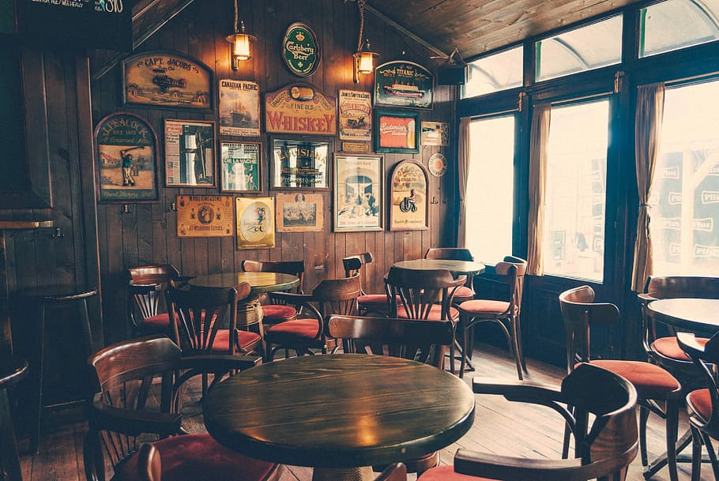
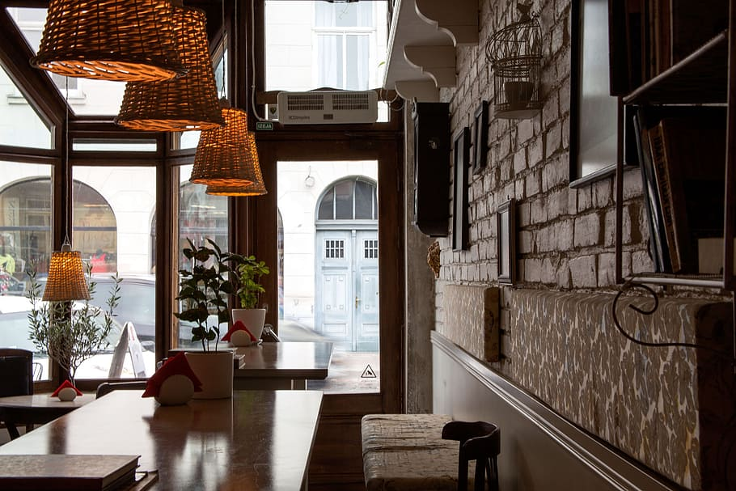

Para entender afundo de onde surgiu o café, é imprescindível conhecer sua história. Que por sua vez carrega grandes momentos até chegar nos seus dias atuais. Não existe uma data específica sobre a origem do café. Porém algumas lendas ressaltam o seu surgimento na região da Etiópia. Segundo este conto, havia um pastor chamado Kaldi que notou a planta do cafezal e resolveu alimentar suas cabras com os frutos. Com isso, Kaldi percebeu uma grande agitação por parte de suas cabras que sentiam-se ativas e mais dispostas. Curioso devido a performance de seus animais, ele ficou abismado e julgou o fruto então como algo ruim e “demoníaco”. Porém ao ser jogado em uma fogueira, Kaldi e os outros monges tiveram a experiência de sentir um cheiro bom vindo do fruto torrado. O que os levou então a experimentar o café. Feito isso, notou-se então uma maior agitação, que lhe dava maior disposição para as rezas.
De fato, os primeiros registros do café foram dados por volta de 575 d.C. Mesmo período em que foi mencionado as lendas. Nessa época, porém, o seu consumo pelo etíopes era feito através da polpa do fruto durante as refeições ou para a criação de bebidas alcoólicas.
 